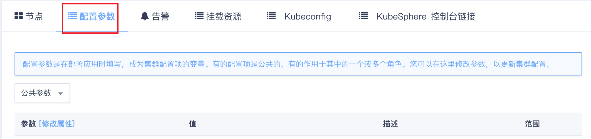
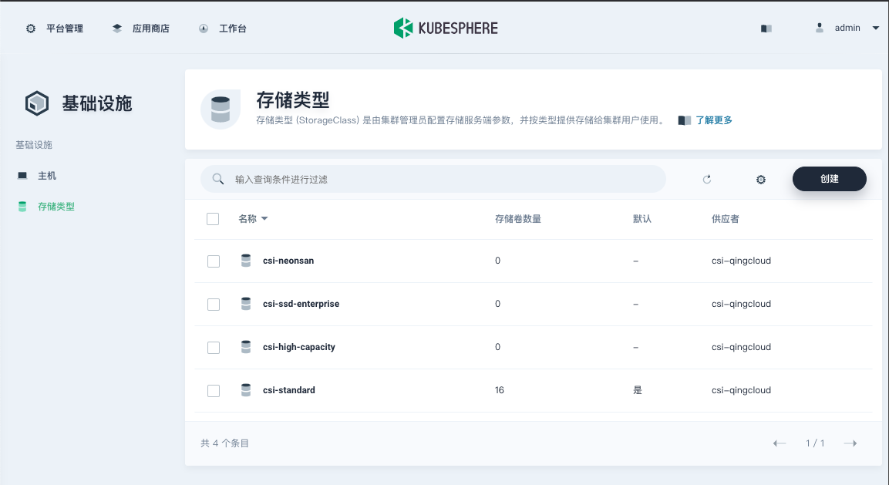

常见问题
VPC 网段
如果 VPC 选择 172.30.0.0/16，需要修改 Docker 默认网段，避免冲突。

| 参数 | 默认值 |
|---|---|
| Docker 网桥地址 | 172.30.0.1/16 |
修改 [安装 KubeSphere]
[安装 KubeSphere] 参数在创建集群后无法修改，请在创建集群前规划好集群用途。
| 参数 | 默认值 |
|---|---|
| 安装 KubeSphere | 选择是否安装 KubeSphere，默认为 true 表示安装 |
云服务器类型与存储类型
系统会根据主节点的云服务器类型自动指定 k8s 的默认存储类型，比如，如果主节点是基础型云服务器，那么默认的 k8s 存储类型就是 csi-standard（基础型），而 KubeSphere 安装时会自动使用默认的存储类型进行挂盘操作，因此，创建集群时至少要有基础型节点才会保证 KubeSphere 安装成功。
在此基础上，如果需要其他类型的工作节点（比如企业型节点或 GPU 节点），可以按需创建。需要注意的是，由于已经指定了与云服务器类型一致的存储类型为默认类型，其他类型的工作节点在部署需要挂盘的应用时，需要明确指定正确的存储类型，从而把工作负载调度到和主节点类型一致的工作节点上，比如：如果希望把 Mysql 部署在企业型节点上，则需要指定存储类型为企业型，从而调度这个 Pod 到企业型节点上：
kind: PersistentVolumeClaim
spec:
accessModes:
- ReadWriteOnce
storageClassName: csi-ssd-enterprise
# ...
当前集群支持的存储类型可通过 KubeSphere 页面 http://ks-console-ip:port/infrastructure/storageclasses 查看。

镜像仓库连通性
k8s 上的工作负载需要拉取 Docker 镜像，请确保集群所在私网能够访问相应的镜像仓库。
如果使用公网镜像仓库，比如 docker.io，请确保 VPC 绑定了公网 IP。
如果使用私有镜像仓库，请确保 QKE 所有节点可以访问到 Harbor 的负载均衡器地址。注意：如果 Harbor 后端使用的是 QingStor 对象存储，还要确保 QKE 所有节点可以访问到 QingStor 对象存储。
防火墙
基础网络部署请将集群缺省防火墙开通 6443 和节点端口范围（默认为 30000-32767，请以创建集群时选择的范围为准）。
| 参数 | 默认值 |
|---|---|
| NodePort 范围 | 30000-32767 |
单节点集群
从 QKE v2.0.0 版本起支持创建单节点集群（只创建一个主节点），方便用户快速测试使用。用户可以随时增加工作节点对集群进行扩容（无法增加主节点）。
注意
默认情况下 QKE 执行 KubeSphere 最小化安装（只包含监控组件），如需开启全部组件，需要创建工作节点（云平台挂盘限制，每台云服务器最多挂载 10 块普通硬盘，而完整安装 KubeSphere 共需要 14 块硬盘）。
增删主节点
目前版本 QKE 不支持增删主节点，请提前规划好集群用途创建单 master 或者三 master（HA）集群。
删除工作节点失败
删除工作节点时，QKE 会首先执行命令 kubectl drain nodes --ignore-daemonsets --timeout=2h 从而确保工作负载都成功迁移到其他节点，然后再执行删除节点的操作。
有时此操作会因为一些原因失败，比如工作负载使用了本地资源（文件系统等），或者其他节点负载较高不足以接纳所有工作负载，此时建议人工执行 kubectl drain nodes 命令查看具体失败原因从而可以采取相应的措施。
注意
请不要人工执行
kubectl delete nodes命令以免造成无法恢复的结果。
删除节点后挂载存储卷的容器组迁移失败
使用云平台硬盘作为存储服务的有状态副本集的容器组所在节点被删除后，可能会遇到此有状态副本集的容器组无法在其他节点重新创建的问题。要查看集群内被删除容器组挂载存储卷的 volumeattachment 对象是否正常清理，将此 volumeattachment 对象删除后，重新创建的容器组可以正常挂载存储卷。
- 找到无法重新创建的容器组
# kubectl get po -n demo-project nginx-perf-7
NAME READY STATUS RESTARTS AGE
nginx-perf-7 0/1 ContainerCreating 0 22h
- 查看容器组无法重新创建的原因，显示挂载存储卷失败
# kubectl describe po -n demo-project nginx-perf-7
...
Events:
Type Reason Age From Message
---- ------ ---- ---- -------
Warning FailedMount 51s (x604 over 22h) kubelet, i-e5ri86tg Unable to mount volumes for pod "nginx-perf-7_demo-project(087b3391-8990-11e9-9b03-525433ce642d)": timeout expired waiting for volumes to attach or mount for pod "demo-project"/"nginx-perf-7". list of unmounted volumes=[nginx-neonsan-pvc]. list of unattached volumes=[nginx-neonsan-pvc default-token-znp5w]
- 找到未挂载上的存储卷
nginx-neonsan-pvc-nginx-perf-7
# kubectl get po -n demo-project nginx-perf-7 -oyaml
...
spec:
volumes:
- name: nginx-neonsan-pvc
persistentVolumeClaim:
claimName: nginx-neonsan-pvc-nginx-perf-7
...
- 找到未挂载上的存储卷对应的 PV
pvc-93e24c1d88d711e9, 到管理控制台查看硬盘名为pvc-93e24c1d88d711e9的硬盘应为可用状态。
# kubectl get pvc nginx-neonsan-pvc-nginx-perf-7 -n demo-project
NAME STATUS VOLUME CAPACITY ACCESS MODES STORAGECLASS AGE
nginx-neonsan-pvc-nginx-perf-7 Bound pvc-93e24c1d88d711e9 100Gi RWO neonsan 44h
- 找到 PV
pvc-93e24c1d88d711e9对应的 volumeattachment 对象名csi-8b2ed050e78ad6f3a5491af35c9351358856ae15cc874262ca0b78a1c332b883
# kubectl get volumeattachment -oyaml|grep pvc-93e24c1d88d711e9 -B 16
apiVersion: storage.k8s.io/v1
kind: VolumeAttachment
metadata:
creationTimestamp: 2019-06-07T03:52:13Z
deletionGracePeriodSeconds: 0
deletionTimestamp: 2019-06-09T00:47:49Z
finalizers:
- external-attacher/csi-yiqiyun
name: csi-8b2ed050e78ad6f3a5491af35c9351358856ae15cc874262ca0b78a1c332b883
resourceVersion: "1178846"
selfLink: /apis/storage.k8s.io/v1/volumeattachments/csi-8b2ed050e78ad6f3a5491af35c9351358856ae15cc874262ca0b78a1c332b883
uid: a21a70df-88d7-11e9-aed1-525433888127
spec:
attacher: csi-yiqiyun
nodeName: i-5n8osu8t
source:
persistentVolumeName: pvc-93e24c1d88d711e9
- 查看未被正常清理的 volumeattachment 对象, status.detachError 显示
node "XXX" not found
# kubectl get volumeattachment csi-8b2ed050e78ad6f3a5491af35c9351358856ae15cc874262ca0b78a1c332b883 -oyaml
apiVersion: storage.k8s.io/v1
kind: VolumeAttachment
metadata:
creationTimestamp: 2019-06-07T03:52:13Z
deletionGracePeriodSeconds: 0
deletionTimestamp: 2019-06-09T00:51:53Z
finalizers:
- external-attacher/csi-yiqiyun
name: csi-8b2ed050e78ad6f3a5491af35c9351358856ae15cc874262ca0b78a1c332b883
resourceVersion: "1180401"
selfLink: /apis/storage.k8s.io/v1/volumeattachments/csi-8b2ed050e78ad6f3a5491af35c9351358856ae15cc874262ca0b78a1c332b883
uid: a21a70df-88d7-11e9-aed1-525433888127
spec:
attacher: csi-yiqiyun
nodeName: i-5n8osu8t
source:
persistentVolumeName: pvc-93e24c1d88d711e9
status:
attached: true
detachError:
message: node "i-5n8osu8t" not found
time: 2019-06-09T00:52:12Z
- 编辑 volumeattachment 对象，删去
finalizers部分
# kubectl edit volumeattachment csi-8b2ed050e78ad6f3a5491af35c9351358856ae15cc874262ca0b78a1c332b883 -oyaml
apiVersion: storage.k8s.io/v1
kind: VolumeAttachment
metadata:
creationTimestamp: 2019-06-07T03:52:13Z
deletionGracePeriodSeconds: 0
deletionTimestamp: 2019-06-09T00:51:53Z
name: csi-8b2ed050e78ad6f3a5491af35c9351358856ae15cc874262ca0b78a1c332b883
resourceVersion: "1180401"
selfLink: /apis/storage.k8s.io/v1/volumeattachments/csi-8b2ed050e78ad6f3a5491af35c9351358856ae15cc874262ca0b78a1c332b883
uid: a21a70df-88d7-11e9-aed1-525433888127
spec:
attacher: csi-yiqiyun
nodeName: i-5n8osu8t
source:
persistentVolumeName: pvc-93e24c1d88d711e9
...
- 观察容器组状态，5 分钟左右可挂载上存储卷，没有其他问题情况下容器组可恢复运行状态
# kubectl get po -n demo-project nginx-perf-7
NAME READY STATUS RESTARTS AGE
nginx-perf-7 1/1 Running 0 23h
删除集群
从 2.0.0 版本起，销毁 QKE 集群后，平台会自动销毁集群内创建的负载均衡器、硬盘等资源。
更早的版本需要手动删除负载均衡器、VPC 等相关资源。
从老版本升级到 2.0.0 版本后，升级前的资源需要手动处理，升级后创建的资源可以自动处理。